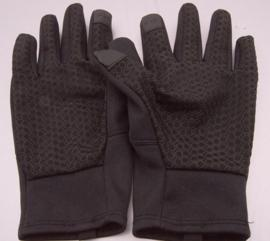
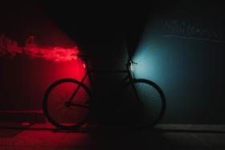
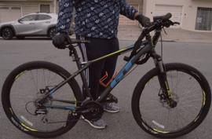
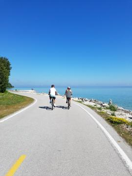
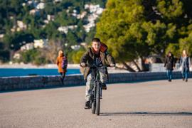
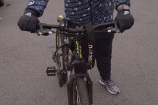
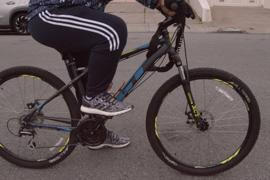
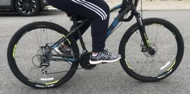
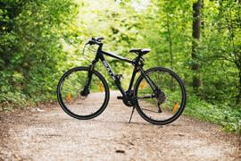
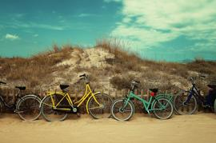

Who am I?
My name is Michael. I am a fourth-year transfer student at Cal Polytechnical State University in San Luis Obispo, CA. My major is City and Regional Planning, and I minor in Landscape Architecture.
What is my favorite hobby? Why?
My favorite hobby is to ride my mountain bike to go to campus or SLO Downtown. I always want to go cycling because:
- Helps the environment by reducing pollution and maintaining good health.
- A good functional activity to take away some stress inside my head.
- Healthy, fun, and low-impact form of activity for everyone.
- Ride my bike to go another city.
What are the steps to learn riding a bike?
Before I talk about cycling instruction, we need to wear essential safety equipment for your body and bike.
- Wear a helmet that protects your head to reduce the risk of a severe injury. It also prevents many unintentional bike death or fatal bike accidents.
- Wear a pair of gloves that provides extra protection in your hands during a crash. It also enhanced grip and control on bike handlebars.
- Have a taillight and headlight install a bike because provide some light to ensure are visible to the road user.
- Choose the right frame from the outset to be more comfortable and fun to ride.
- Find a flat surface or open space such as a park trail or quiet road to practice braking and balancing for a more extended period.
- Try to practice using the hand brakes to feel how much pressure it takes to reduce the speed or stop while off your bike.
- Sit on seat with one foot on the ground and the other on the pedal like 1- 2 o'clock position.
- press down pressure on the pedal in the high place that gives the bike its forward momentum
© Copyright Photo by Pavel Danilyuk from Pexels
 © Copyright Photo by Thomas Jarrand from Unsplash
 © Copyright Photo by Solare Flares from Pexels
© Copyright Photo by Alexander Nadrilyanski from Pexels
  Any additinal information and tip for cycling?
There is some additional information and tip for cycling. There are three craigslist cycle:
- Road Bike: build a lightweight frame, wheel, components for efficiently riding on the road.
- Mountain bikes: build for off-road cycling in rough terrain, trail riding, downhill in a mountain.
- Hybrid bikes: blend characteristics from road bikes and mountain bikes.
© Copyright Photo by Jean-Daniel Francoeur from Pexels
© Copyright Photo by Philipp M from Pexels
© Copyright Photo by Bogdan Dada from Unsplash
*Tip for cycling:
- Try to look straight because it maintains a straight line and tends to have a balanced path.
- Getting out of comfort zone and being playful on your bike, you can become a better rider and have more fun